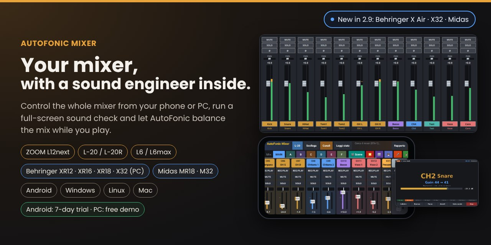
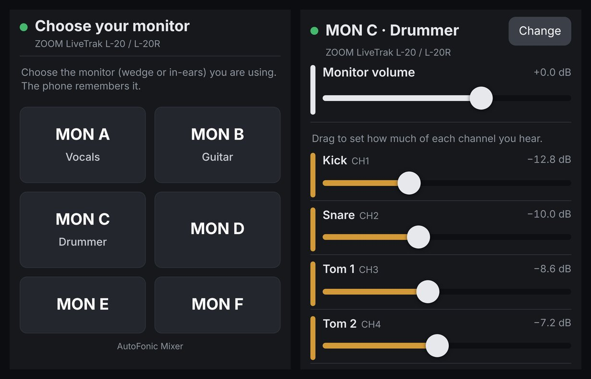

AUTOFONIC MIXER
The ZOOM LiveTrak app for Android and PC
Control your ZOOM LiveTrak L-20, L-20R, L12next, L6 and L6max from an Android phone or a Windows, Linux or Mac computer. ZOOM's own control apps run only on iPhone and iPad: AutoFonic Mixer is the L-20 / L-20R app for Android and the LiveTrak controller for the PC.
🆕 NEWS
- 2.9.4 · 20 Nov 2026 — 🎚 L-20 / L-20R on the PC: the FX1 RTN and FX2 RTN strips no longer disappear when an older models file is present
- 2.9.3 · 20 Nov 2026 — 🎚 sound check: Pause and Stop no longer save into scene 1 or 2 by themselves (Stop asks where to save) · 🎛 safer gain in Live · 💾 Behringer XR: the scene is saved at the end of the sound check · 🤖 L-20: AI Assist keeps working after the sound check · 🅿️ PayPal button in the PC Unlock window
- 2.9.2 · 20 Nov 2026 — 📱 Monitors from the phone: each musician sets their own monitor mix from the phone or tablet browser (iPhone and iPad too) · 🎚 Virtual soundcheck for L-20 / L-20R · 🎨 default instruments for Behringer and L6
- 2.9.1 · 19 Nov 2026 — 🔓 the PC program unlocks by itself after paying by card · 💾 L-20: SD recording time left · 🎬 scene buttons with just the number
- 2.9 · 18 Nov 2026 — 🎛️ Behringer and Midas mixers on the PC (X Air XR12 · XR16 · XR18, X32, Midas MR18 · M32) · 💳 full version €9.99, code right after paying · 🪕 ukulele instruments

Supported mixers
L12nextL-20L-20RL6L6maxBehringer XR12XR16XR18X32Midas MR18M32
| Mixer | Connection | Phone and PC |
|---|---|---|
| ZOOM LiveTrak L12next | USB + ZOOM BTA-1 Bluetooth | ✅ all controls, sound check and auto mix on the PC |
| ZOOM LiveTrak L-20 / L-20R | USB + ZOOM BTA-1 Bluetooth | ✅ all controls, tested on real mixers |
| ZOOM LiveTrak L6 / L6max | USB-C, or wireless with a CME WIDI Jack | ✅ works |
| Behringer X Air XR18 · Midas MR18 | network: Wi-Fi or Ethernet cable | ✅ PC: control, sound check and auto mix |
| Behringer X Air XR12 · XR16 · Midas MR12 | network: Wi-Fi or Ethernet cable | ✅ PC: control and level check |
| Behringer X32 · Midas M32 | network: Ethernet cable | ✅ PC: 32 channels, sound check and auto mix with the X-USB card |
What you can do

All the faders in your hand. Faders, pan, mute, solo, meters and SIG lights for every channel, stereo channels and effect returns. Perfect for the L-20R, which has no faders.

Every channel setting. 3-band EQ with mid frequency, low cut, polarity, EQ OFF, EFX 1 and 2 sends, monitor mixes A–F for each musician.

On the PC too. Windows, Linux and Mac, with scenes, the SD recorder (REC/PLAY per channel, play, stop, time) and the full mixer state read from the desk.

A sound engineer inside. On the PC, a full-screen sound check readable from behind the drums, and an assistant that listens to every channel over USB and balances the mix while you play.
🆕 NEW IN 2.9.2 · ON THE PC
Monitors from the phone: every musician sets their own monitor mix

AutoFonic Mixer on the PC holds the mixer; the musicians scan a QR code and a page opens in the browser: iPhone, iPad and Android, nothing to install.
- Each one picks their monitor (name them on the PC, e.g. C · Drummer) and moves only their own mix: how much of each channel they hear, plus the monitor volume.
- Several phones at once; what the sound engineer changes shows up on the phones by itself.
- Safe: a 4-digit code, only the monitor sends (never the main mix, mutes or scenes), only from the local network.
- ZOOM L12next, L-20 / L-20R, L6 and Behringer X Air / X32. Free during the 14-day PC demo.
PC and phones on the same Wi-Fi, no internet needed: any Wi-Fi router on stage (the safest), the venue's Wi-Fi (not the "guest" network), or a phone's or the PC's hotspot. If it works at home but not at the venue, set that Wi-Fi as a private network in Windows.
🆕 NEW IN 2.9.2 · ZOOM L-20 / L-20R
Virtual soundcheck: the soundcheck without the band
Record the band once on the mixer's SD card, then play the tracks back through their own channels and set up the mix in peace: EQ, faders, monitor mixes, even the AI sound check. The day before the gig, or with the venue still empty.
- One button for everything: AutoFonic Mixer arms the channels, records, rewinds and plays, in a loop: when the recording ends it starts again.
- The recorded tracks of CH1–16 come back into their channels, exactly like the mixer's REC/PLAY keys.
- "Back to live" puts every channel back as it was, even if you close the program, the Bluetooth drops or the demo ends.
- PC and Android, in the free demo too.
Only for the ZOOM LiveTrak L-20 and L-20R: the only LiveTrak mixers whose tracks an app can switch to PLAY one by one. First version: your reports from real gigs are welcome.
Frequently asked questions
Is there a ZOOM L-20 / L-20R app for Android?
Yes: AutoFonic Mixer, on Google Play. ZOOM's L-20 Control app exists only for iOS. It connects with the ZOOM BTA-1 Bluetooth adapter, like ZOOM's app.
Can I control a ZOOM LiveTrak L-20R without an iPad?
Yes, from an Android phone or from a Windows, Linux or Mac computer.
Is there an app for the ZOOM L12next on Android or Windows?
Yes, on Android and on the PC, where it also runs the sound check and the automatic mix. The original L-12 is not supported.
Is there an iPhone / iPad app?
Not yet. But with the monitors from the phone every musician can set their own monitor mix from an iPhone or iPad browser, with AutoFonic Mixer on the PC holding the mixer.
Does it work with the ZOOM L6 / L6max?
Yes, with the USB-C cable, or wireless with a CME WIDI Jack.
Does it work with the Behringer XR18, XR12, XR16 or X32 / Midas M32?
Yes, on the PC (Windows, Linux, Mac) over the network: faders, mute, EQ, compressor, gate, sends, mute groups, scenes. With the XR18 / MR18 and the X32 also the sound check and the automatic mix.
Is it free?
Android: 7-day free trial, then a one-time purchase. PC: free 14-day demo, then the full version for €9.99, one time only: pay by card and you get the unlock code right away.
🔑 Full PC version: €9.99, one time only
⚡ Pay by card and you get the unlock code right away, on screen and by email.
Valid forever on your PC. In AutoFonic Mixer click 🔑 Unlock to see the code of your PC, then choose how to pay:
Card (Stripe): write the code of your PC when paying, the unlock code appears right after paying and arrives by email too. PayPal: then email autofonic.mixer@gmail.com the code of your PC and you get the unlock code by email.
Do you like this project? Support it with a donation: even a small one helps AutoFonic Mixer keep growing.
Donate with PayPalIndependent project by Francesco Rizzo, not affiliated with ZOOM Corporation or Music Tribe. ZOOM and LiveTrak are trademarks of ZOOM Corporation; Behringer, X Air, X32 and Midas are trademarks of Music Tribe. Contact: autofonic.mixer@gmail.com · GitHub · Privacy